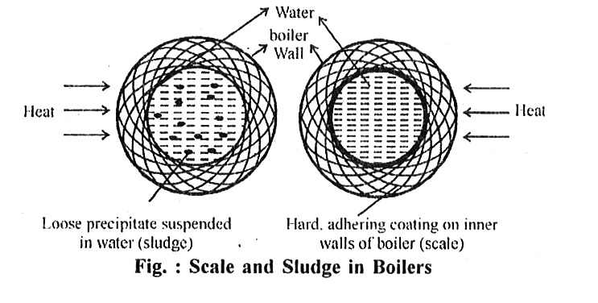

Que 10: State harmful effects of Scale and Sludge formation in boilers.
Explain disadvantages of scale & sludge formation in Boilers.
Answer:
Boilers are used for steam generation. When hard water is evaporated, progressively the concentration of dissolved salt is increased.
When their saturation points are reached, the dissolved salts of calcium and magnesium along with other soluble impurities are precipitated on the inner walls of boilers and in due course of time adhere to the metal surface in the form of scales and sludges.

When the precipitate formed is soft, slimy and loose, known as sludge and is hard and firmly adhering on the inner walls of boilers known as scale.
The sludges are generally formed by the substance, which have greater solubility in hot water than cold water. So, sludges are formed in colder parts of boilers.
Scale Formation
Scales are hard, adherent crusts or coating formed on the inner walls of the boiler during steam generation. They
are difficult to remove, even with the help of hammer and chisel and are the main source of boiler trouble.
Causes
Scales are formed mainly by Ca (HCO3)2 and MgCl2 in low pressure boiler, whereas they are formed mainly by CaSO4 and silica in high pressure boilers.
(a) Hydrolysis of Magnesium Salts : The soluble MgCl2 salts are hydrolysed under high temperature conditions, to give soft Mg(OH)2 scale.
MgCl2 + 2H2O -> Mg(OH)2 + 2HCI
Scale
(b) Decomposition of Bicarbonates
Ca(HCO3)2 -> CaCO3+ + H2O + CO2
Mg (HCO3)2 -> MgCO3 + H2O + CO2
MgCO2 may further decompose near the boiling point of water to give Mg (OH)2.
MgCO3 + H2O -> Mg(OH)2 + + CO2
CaCO3 is soft and is the main cause of scale formation in low pressure boilers. But in high pressure boilers, Caco3 is soluble.
CaCO3 + H2O ----> Ca(OH)2 + CO2
(c) Deposition of CaSO4: The solubility of CaSO4 decreases with increase in temperature. The CaSO4 gets precipitated as hard scale on the hotter parts of the boiler. This type of scale causes trouble mainly in high pressure boilers.
CaSO4 scale is quite adherent and difficult to remove, even with the help of hammer and chisel.
(d) Formation of Silicates : Formation of silicates of Ca and Mg may take place as CaSiO3, and MgSiO3 respectively even if the small amount of SiO2 is present in boiler feed water.
These scales once deposited, they adhere very firmly to the inner walls of boiler which are difficult to remove. One important source of silica in water is the sand filter.
Sludge Formation
(a) Decrease in Solubility : Certain impurities in water decreases solubility with increase of temperature, so such impurities separates out from water at a higher temperature e.g. In CaSO4 solubility decreases with increase of temperature.
(b) Hydrolysis of Salts : The soluble magnesium salts are hydrolyzed under high temperature conditions to give soft Mg(OH)2 scale.
MgCl2 + 2H2O -> Mg(OH)2 + 2HCI
(c) Chemical Decomposition : The decomposition of bicarbonates of calcium and magnesium takes place to give rise two carbonates CaCO3 and MgCO3 respectively.
Ca(HCO3)2 -> CaCO3 + +H2O + CO2
Mg(HCO3)2 -> MgCO3 + H2O + CO2
MgCO3 may further decompose near boiling point of water to give Mg(OH)2
MgCO3 + H2O + Mg(OH)2 + +CO2 These salts precipitate and deposits inside the boiler as scale and sludge.
(d) Formation of Silicates : If small amount of SiO2 is present in boiler feed water it give rise to formation of Casio3 and MgSiO3 adhere very firmly to inner walls of boiler.
Disadvantages of Scale & Sludge Formation
1. Decrease in Efficiency of Boiler : The excessive scale formation may cause clogging of boiler tubes which decreases the efficiency of the boiler.
2. Wastage of Fuel : Scale is a poor conductor of heat. This results in the reduced rate of heat transfer, and thus the evaporative capacity of the boiler will be reduced. Thus scale formation also decreases the efficiency of the boiler and causes a wastage of fuel.
3. Danger of Explosion : The scale formation also leads to the uneven expansion of the boiler metal. Due to uneven expansion, thick scales crack and water comes suddenly in contact with overheated iron plates. This results in the formation of a large amount of steam suddenly which in turn develops a sudden high pressure. The sudden high pressure thus developed may lead to the explosion of the boiler.
4. Boiler Becomes Unsafe : The overheating of boilers occurs due to scale formation and metal becomes soft and weak. This makes the use of boiler unsafe, particularly at high pressures.
5. Bagging: The distortion of boiler material is known as bagging. The superheating of the boiler leads to the distortion of the boiler material.
6. Corrosion : There are certain salts formed from scale, corrodes the tubes and at the higher temperature so maintained, there is still greater corrosion of the boiler tubes.
Removal of Scales and Sludges
1. If they are loosely bound to inner surface of the boiler, can be removed with the help of scrape or wire brush or wood.
2. If they strongly adhere to walls and are hard, can be removed by dissolving them by adding certain chemicals like
(a) 5-10% HCl solution.
(b) EDTA solution.
3. Blow down operations : In continuous blow down, a definite concentration of substance in boiler water is maintained. Intermittent blow down is aimed at removing sludge from a boiler water. Thus blow down operation is attempted to keep salt concentration at a specific level and to control sludge in the boiler.